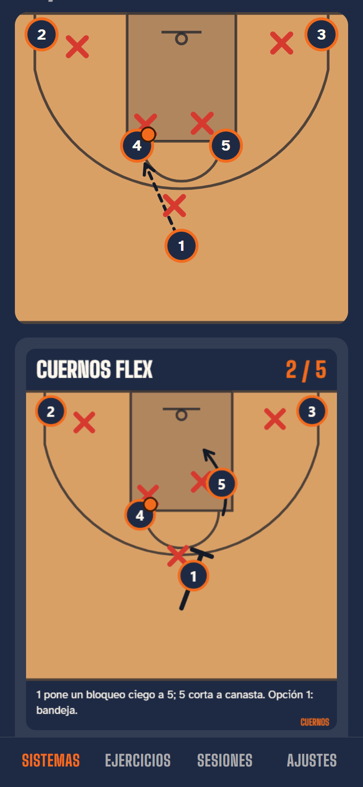
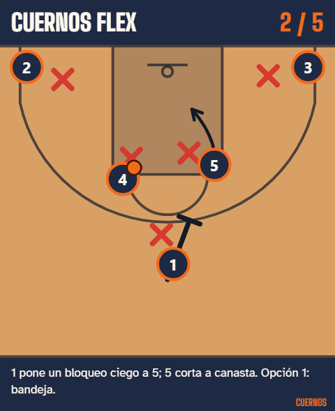
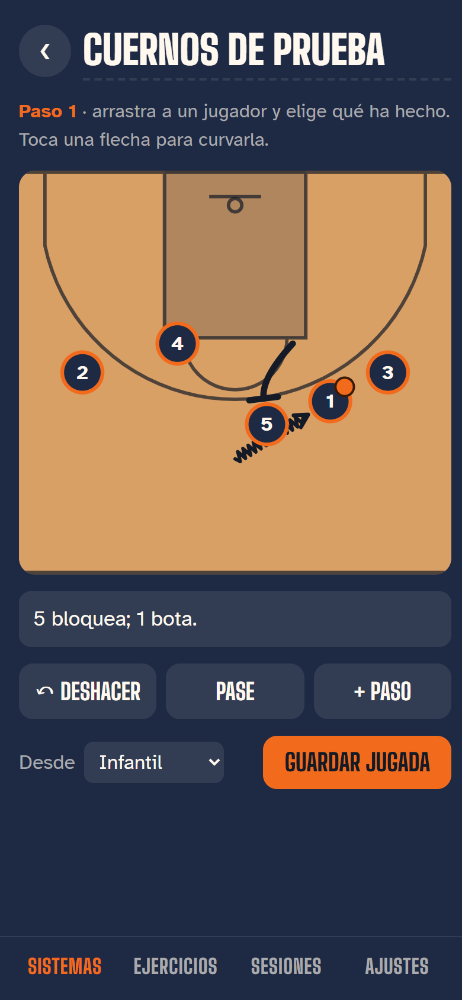
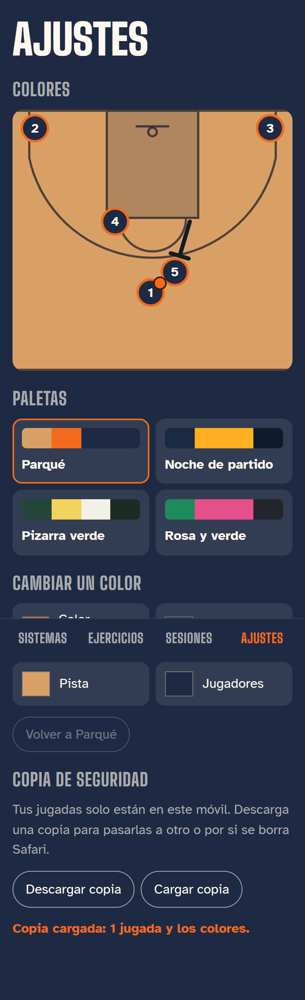
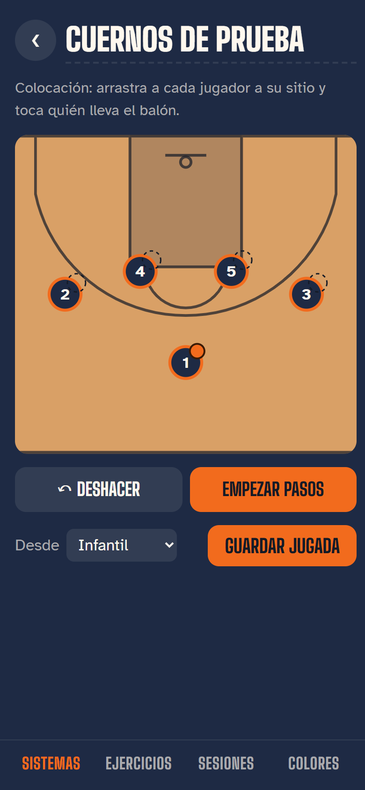
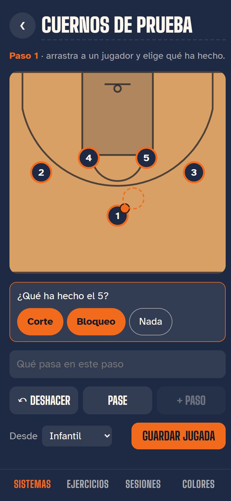
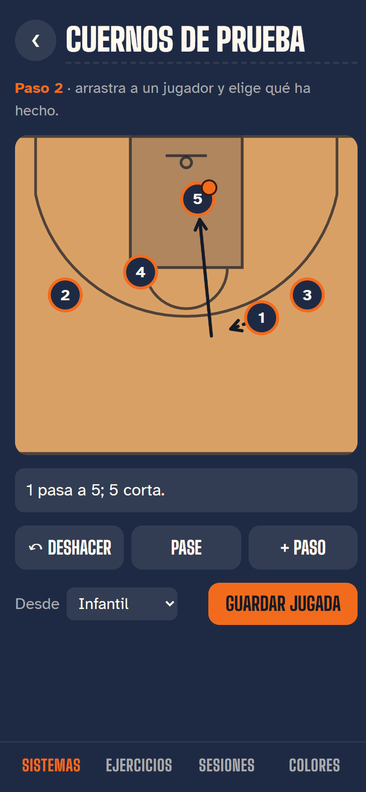
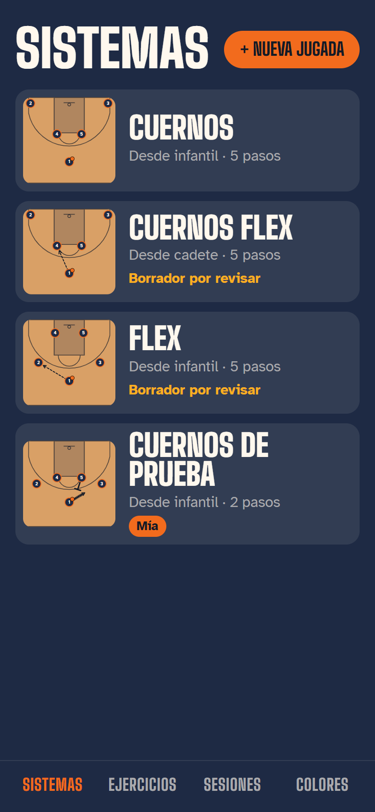
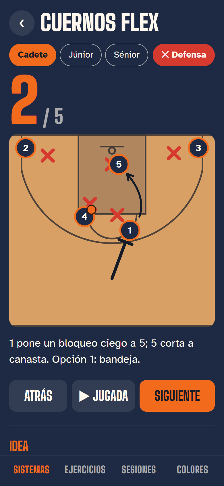

Cada vuelta del loop añade una entrada arriba: lo hecho con capturas, lo que se puede mejorar y, cuando toca diseñar, las opciones para elegir.
29/10 · Después de probarla en el iPhone
Mover mejor, GIF, logo e interfaz
Tres cosas para elegir
Dime una letra en cada bloque: 1 · cómo mover a los jugadores, 2 · el logo y 3 · la interfaz. Se pueden mezclar (por ejemplo, «interfaz A con la galería de la B»). Estas tres no las programo hasta que elijas; el GIF y lo del dedo ya están hechos.
Ya hecho

Botón GIF: se crea en unos segundos y «Enviar o guardar» abre WhatsApp, Fotos…

Un fotograma del GIF: nombre, paso, jugada animada y explicación
Cambios
Dedo fuera de la pista: ya no se selecciona texto ni sale el menú de copiar al arrastrar. Escribir en los campos sigue funcionando.
GIF de la jugada: respeta tus colores y si la defensa está puesta o no. Se repite solo, con una pausa al final de cada paso. También puedes mantener pulsada la vista previa para guardarla en Fotos.
Mejorable
El GIF pesa 1,6 MB con 5 pasos; WhatsApp lo pasa a vídeo corto y va bien.
Más adelante se puede sacar también en vídeo MP4 o como imagen fija de cada paso.
1 · Mover a los jugadores
En las tres el jugador va pegado al dedo (ya no una sombra), se agarra aunque no le aciertes de lleno y se pueden mover varios jugadores en el mismo paso.
A · Arrastra y dibuja
El camino que hace tu dedo es la flecha, con su curva. Sin ventanas en medio.Adivina el movimiento: con balón es bote; si acaba pegado a un compañero, bloqueo; si no, corte. El pase se hace arrastrando el balón al compañero.Si adivina mal, tocas la etiqueta de la flecha para cambiarlo (un toque más).
B · Elige y dibuja
Barra fija con Corte, Bote, Bloqueo y Pase: eliges y dibujas tantos como quieras de ese tipo.Nunca se equivoca: lo que eliges es lo que sale.Hay que cambiar de herramienta entre movimientos distintos.
C · Grabar en directo
Pulsas grabar y mueves a los jugadores como si fuera la pista, incluso dos a la vez con dos dedos. Guarda el ritmo real.La más divertida y la más parecida a jugar.Más difícil de corregir un detalle; hay que regrabar el paso.
2 · Logo
Irá en el icono del iPhone, en una pantalla de bienvenida al abrir, arriba en Sistemas, en el GIF y en la pestaña del navegador.
A · Balón con cuernos
Se entiende al momento: baloncesto y cuernos. Muy reconocible en pequeño.Tiene algo de escudo de equipo.Más de mascota que de herramienta de entrenador.
B · La jugada es el logo
Es la jugada Cuernos dibujada: dos jugadores en los codos con sus flechas formando los cuernos.Dice «pizarra de entrenador» sin palabras.En tamaño muy pequeño se pierden los detalles de la pista.
C · La U son los cuernos
El nombre y el logo son lo mismo: la U de CUERNOS son dos cuernos con el balón dentro.El más limpio y moderno; queda bien en camisetas y sudaderas.Sin el nombre al lado, el icono solo es más abstracto.
3 · Interfaz
En cada opción: la lista de jugadas y una jugada abierta.
A · Marcador pro
Sigue el estilo de ahora, pero más ordenado: buscador, filtros, barra de tiempo con los pasos y la ficha en pestañas en vez de un texto largo.El cambio menos brusco.Sigue habiendo que bajar para ver algunas cosas.
B · Pizarra primero
Como FastDraw o TacticalPad: la pista ocupa casi toda la pantalla y el resto va en una hoja que subes desde abajo.Galería de jugadas en dos columnas, como fotos.La explicación y la ficha quedan escondidas hasta que subes la hoja.
C · Inicio de club
Como Elite Hoops: pantalla de inicio con «Seguir donde lo dejaste» y colecciones (ataque, defensa, ejercicios) que se deslizan.La que más parece una app profesional de pago.Un toque más para llegar a la pizarra; más trabajo de programar.
29/10 · Tramo 1 · Cierre
Tramo 1 terminado: falta tu visto bueno
Para seguir necesito que lo apruebes
Si te gusta, lo paso a la app publicada (la que tienes en el iPhone) y el loop sigue con el tramo 2: ejercicios y sesiones con cronómetro. Si quieres cambiar algo, dímelo y lo arreglo antes.

Flechas que se curvan al tocarlas

Copia de seguridad en Ajustes
Cambios del tramo
Antes: una pizarra que saltaba de paso en paso, sin defensa y con 3 jugadas fijas.
Ahora: defensa que se mueve y se queda atrás en los bloqueos; balón que bota y vuela; modo presentación a pantalla entera; velocidad; deslizar; editor para crear tus jugadas con flechas curvas; guardado en el móvil con copia de seguridad.
Revisión de código hecha: encontró 3 fallos (teclas en la presentación, copia vacía en el iPhone, Deshacer que borraba lo escrito) y están arreglados.
20 pruebas automáticas, y el editor y la copia probados de principio a fin como con el dedo.
Mejoras para más adelante
Que la defensa elija pasar por delante o por detrás del bloqueo.
Editar un paso que no sea el último sin deshacer.
En el iPhone, girar a horizontal es a mano (Safari no deja hacerlo solo).
Sigue pendiente que me digas quién pasa al 1 en Cuernos Flex y la rotación del Flex.
29/10 · Tramo 1 · Paso 4: editor
Ya puedes crear tus propias jugadas

1. Colocas a los cinco arrastrando

2. Arrastras al 5 y eliges «Bloqueo»

3. Paso 2: pase al 5 y corte; el texto sale solo

4. Guardada en el móvil, marcada «Mía»
Hecho
Editor arrastra y elige (opción B): arrastras a un jugador y eliges corte, bote o bloqueo. Al del balón le ofrece bote primero.
Botón Pase para elegir a quién va el balón.
El texto del paso se escribe solo («5 bloquea; 1 bota.») y puedes cambiarlo; si lo cambias, ya no se pisa.
Deshacer, + Paso, nombre de la jugada y nivel mínimo.
Las jugadas se guardan en el móvil, salen en la lista con «Mía» y se pueden editar o borrar (con confirmación). Las del libro se pueden duplicar como variante.
Lo he probado de principio a fin como lo harías con el dedo: dos pasos, guardada y abierta otra vez.
Mejorable
Las flechas salen rectas; falta poder curvarlas tocándolas (lo dejo para la siguiente vuelta, con la copia de seguridad).
Solo se edita el último paso; para cambiar uno anterior hay que deshacer.
El botón de la defensa en la ficha ahora es solo una ✕ junto a «Presentar», porque con cuatro niveles no cabía.
Modo presentación (opción A): pista entera, tocar a la derecha anima el paso siguiente y a la izquierda vuelve atrás. Los mandos se esconden a los 2,5 segundos y vuelven al tocar. En horizontal van en una columna a la izquierda para no tapar las esquinas.
El balón vuela en los pases (se separa de su sombra y crece un poco en el aire) y bota en los botes.
Flechas de bote en zigzag, como en las pizarras de verdad.
Siguiente anima el paso en vez de saltar; «Jugada» la enseña entera.
Velocidad 0,5×, 1× y 2×, y deslizar el dedo sobre la pista para avanzar o retroceder.
En el ordenador también va con las flechas del teclado.
Mejorable
En el iPhone, Safari no deja poner pantalla completa de verdad ni girar solo: hay que girar el móvil a mano (si la instalas en la pantalla de inicio sí se ve sin barras).
La barra de abajo con la explicación tapa un poco el medio campo en horizontal.
29/10 · Tramo 1 · Paso 2: defensa
La defensa ya sale en la pizarra

Hecho
Cinco X rojas, cada una entre su atacante y la canasta.
La del balón va pegada (1 m); las demás se separan y se cierran un poco hacia el balón para ayudar.
Van un poco por detrás del ataque: en un corte o un bloqueo se quedan atrás, como el defensor del 5 en el bloqueo ciego de la captura.
Botón «Defensa» para enseñarla u ocultarla; la app se acuerda de lo que elegiste.
Mejorable
De momento ningún defensor elige pasar por delante o por detrás del bloqueo: solo llegan tarde. Se puede añadir cuando tengamos el editor.
Debajo de canasta la X del 5 queda medio tapada (está tan cerca que no cabe).
29/10 · Tramo 1 · Paso 1: diseño
Pizarra viva y editor: elige cómo
Elegido por Adam
Presentación A · Solo pista y editor B · Arrastra y elige.
Modo presentación (móvil en horizontal)
A · Solo pista
La pista ocupa todo: perfecta para enseñarla en un tiempo muerto.Tocar a la derecha avanza y a la izquierda retrocede, sin buscar botones.Los mandos se esconden a los 2 segundos; la explicación del paso solo sale en una línea.
B · Pista y barra de tiempo
Barra como la de un vídeo: arrastras y la jugada va hacia delante o atrás a tu ritmo.Velocidad y defensa a mano, como en FastDraw.La barra quita un poco de pista.
C · Marcador al lado
Sigue el estilo Marcador: número enorme y explicación siempre a la vista.Botones grandes, fáciles de tocar con prisa.La pista se ve más pequeña.
Editor de jugadas
A · Herramientas abajo
Eliges corte, bote, bloqueo o pase, tocas al jugador y dibujas con el dedo (como Coach's Clipboard).Control total de las curvas.Dos toques por movimiento.
B · Arrastra y elige
La más rápida: arrastras al jugador a su sitio y luego eliges qué movimiento ha sido.Si tiene el balón, ofrece bote o pase primero.Las curvas se hacen solas; para afinarlas hay que tocar la flecha.
C · Paso a paso guiado
Te va preguntando: quién se mueve, qué hace, adónde va. Nadie se pierde.Bueno para entrenadores que empiezan.La más lenta cuando ya sabes usarla.